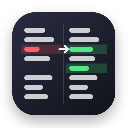

Diffline
Compare and merge files and folders. Native, fast, bought once.
Two files side by side, every change aligned, the exact words that differ highlighted. Take the left or the right version of each change and save. Point it at two folders to see what was added, removed or modified.
brew install --cask patbonecrusher/tap/diffline
Source on GitHub


Aligned, word by word
Changed lines sit next to each other and the words that differ are highlighted. Long lines wrap on both sides without breaking the alignment.
Merge with one click
Arrows in the center gutter copy a change left or right. Undo is always one ⌘Z away, and ⌘S writes the result back.
Three-way merge
Base, yours and theirs side by side with the result in the middle. Non-overlapping edits merge on their own; you only decide the real conflicts. Works as git mergetool.
Folders too
Compare two folders recursively, filter to differences, and double-click any file to open it side by side.
Syntax coloring
Swift, Python, JavaScript, TypeScript, Go, Rust, C, C++, Java, Kotlin, JSON, YAML, HTML, CSS, Markdown, shell and more, detected from the file name.
Noise control
Ignore trailing or all whitespace, case, or blank lines when that is what matters.
Patches
Export or copy a unified diff for any comparison, ready for git apply or a code review.
Fits the Mac
Drop two items on the window or Dock icon, pick Compare with Diffline in Finder, use the Services menu, and it runs sandboxed with no network access.